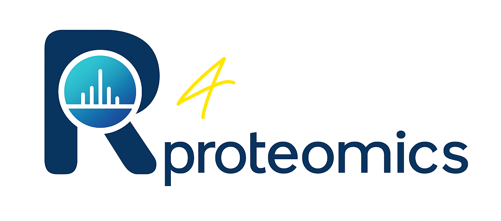

Welcome 
About This Course
In recent years, mass spectrometry-based proteomics has become an essential tool in the life sciences, enabling quantitative, systems-level insights into protein expression, post-translational modifications, and cellular signaling dynamics. As the complexity and volume of proteomics data continue to increase, the demand for robust, transparent, and reproducible computational methods has never been greater.
This 5-day intensive training course - r4proteomics - is designed to equip researchers, bioinformaticians, and data scientists with the practical skills and theoretical grounding necessary to analyze proteomics data using the R programming language and the Bioconductor ecosystem. Through a combination of guided tutorials, hands-on exercises, and real-world case studies, participants will build fluency in core statistical and computational methods widely used in proteomics research and translational applications.
The curriculum begins with foundational programming in R and progresses through quality control, normalization, and differential analysis of proteomics data, culminating in advanced topics such as functional enrichment, longitudinal modeling, and integration with public datasets.
This course is ideal for professionals seeking to deepen their expertise in computational proteomics within pharmaceutical, biotechnology, and academic research environments. Participants will leave with not only a solid methodological framework but also ready-to-use code templates and workflows applicable to their own projects.
You will learn:
- Day 1: R fundamentals and RStudio basics
- Day 2: Understanding proteomic data and quality control
- Day 3: Data preprocessing and differential expression analysis
- Day 4: Functional analysis, longitudinal studies, and public datasets
- Day 5: Real-world applications and case studies
Prerequisites
- Basic computer literacy
- Interest in biological data analysis
- No prior R programming experience required
Course Materials
All data files, scripts, and additional resources are available in the course repository.
How to Use This Book
Each chapter corresponds to one day of training. Chapters include:
- Learning objectives: What you’ll achieve
- Theory sections: Conceptual background
- Practical exercises: Hands-on coding
- Case studies: Real-world applications
Installation Instructions
Before starting Day 1, please ensure you have installed:
# Install R (version >= 4.3.0) from https://cran.r-project.org/
# Install RStudio from https://posit.co/download/rstudio-desktop/
# Install required CRAN packages
install.packages(c(
"bookdown", "rmarkdown", "knitr", "pheatmap", "ggplot2", "downlit", "xml2",
"reshape2", "gridExtra", "tidyverse", "lme4",
"ggforce", "scatterpie", "png" # Optional
))
# Install Bioconductor packages
if (!requireNamespace("BiocManager", quietly = TRUE))
install.packages("BiocManager")
BiocManager::install(c(
"limma", "vsn", "sva", "clusterProfiler", "org.Hs.eg.db", "lme4",
"KEGGREST", "AnnotationDbi", "annotate", "GO.db",
"genefilter", "GOSemSim", "DOSE", "enrichplot"
), update = TRUE, ask = FALSE)